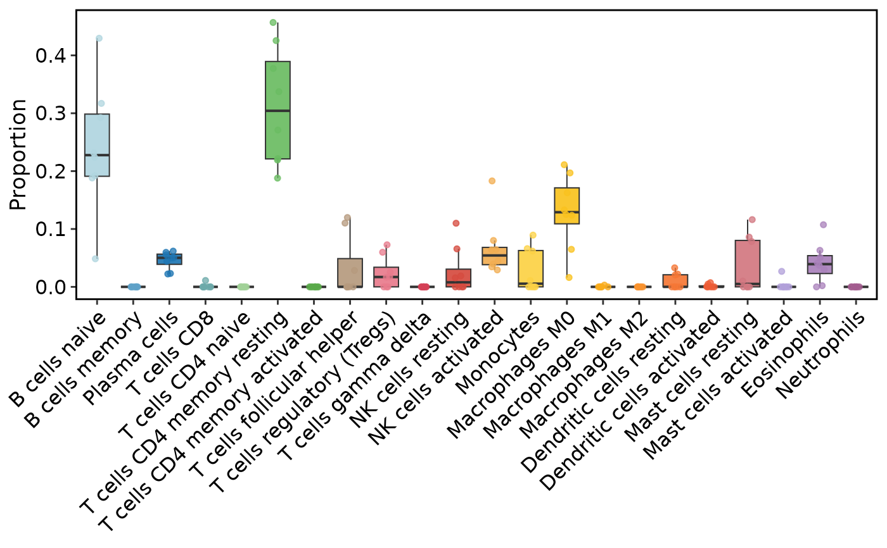
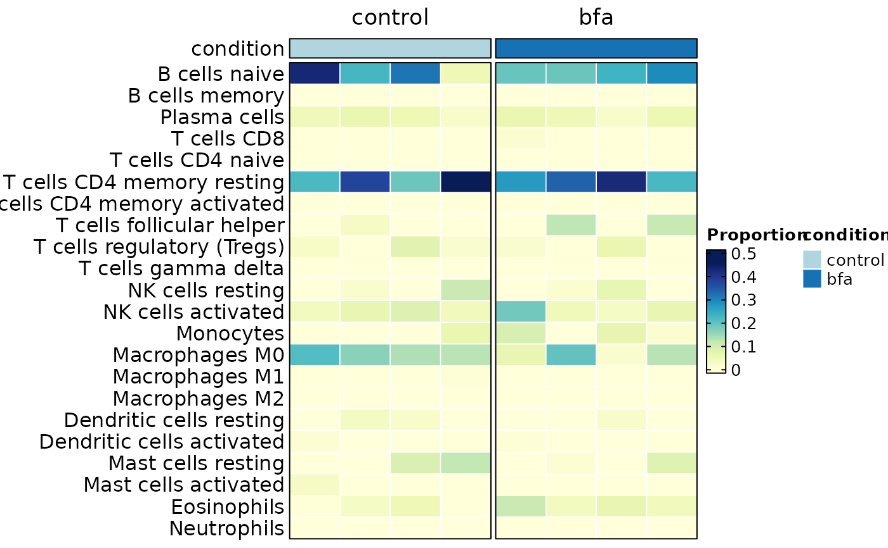

Plot deconvolution results
Usage
DeconvolutionPlot(
object = NULL,
res = NULL,
plot_type = c("bar", "heatmap", "box"),
sample_order = NULL,
cell_type_order = NULL,
palette = "Chinese",
palcolor = NULL,
heatmap_palette = "YlGnBu",
heatmap_palcolor = NULL,
sample_annotation = NULL,
sample_annotation_palette = "Chinese",
sample_annotation_palcolor = NULL,
sample_split = NULL,
cluster_rows = FALSE,
cluster_columns = FALSE,
show_row_names = TRUE,
show_column_names = FALSE,
theme_use = "theme_scop",
theme_args = list(),
legend.position = "right",
legend.direction = "vertical",
grid_major = FALSE,
verbose = TRUE,
...
)Arguments
- object
A
SummarizedExperimentobject containing deconvolution results inmetadata(object)[["Deconvolution"]].- res
A deconvolution result data frame. When provided,
objectis ignored.- plot_type
Plot type. One of
"bar","heatmap", or"box".- sample_order
Optional sample order.
- cell_type_order
Optional cell-type order.
- palette
Palette used for discrete cell-type colors in
"bar"and"box"modes.- palcolor
Optional custom colors for
palette.- heatmap_palette
Palette used for continuous proportions in
"heatmap"mode.- heatmap_palcolor
Optional custom colors for
heatmap_palette.- sample_annotation
Character vector of
colData(object)columns used as top annotations in"heatmap"mode.- sample_annotation_palette
Palette(s) used for
sample_annotation.- sample_annotation_palcolor
Optional custom colors for
sample_annotation_palette. Use a list when multiple annotations are provided.- sample_split
Optional
colData(object)column used to split heatmap columns for grouped comparison.- cluster_rows, cluster_columns
Whether to cluster rows or columns in
"heatmap"mode.- show_row_names, show_column_names
Whether to show row or column names in
"heatmap"mode.- theme_use, theme_args
Theme name or function, plus extra theme arguments.
- legend.position
Legend placement (
"none","left","right","bottom","top"), direction, and title.legend.title = NULLuses the group name.- legend.direction
Legend direction:
"horizontal"or"vertical".- grid_major
Whether to show major grid lines for
"bar"and"box"plots.- verbose
Whether to print the message. Default is
TRUE.- ...
Reserved for future use.
Value
A ggplot object.
For plot_type = "heatmap", returns a ComplexHeatmap::Heatmap object.
Examples
Restored example output generated on 2026-10-13 from SCOP 53ed7e08f. These historical examples have not been revalidated against the current release. Current usage and arguments are documented above.
data(islet_bulk)
islet_bulk <- RunDeconvolution(
islet_bulk,
method = "CIBERSORT",
backend = "cpp",
perm = 0
)
#> ℹ [2026-10-13 16:18:35] Use 400 shared genes for CIBERSORT
DeconvolutionPlot(islet_bulk, plot_type = "bar")
 DeconvolutionPlot(islet_bulk, plot_type = "box")
DeconvolutionPlot(islet_bulk, plot_type = "box")

ht <- DeconvolutionPlot(
islet_bulk,
plot_type = "heatmap",
sample_annotation = "condition",
sample_split = "condition"
)
ComplexHeatmap::draw(ht)
